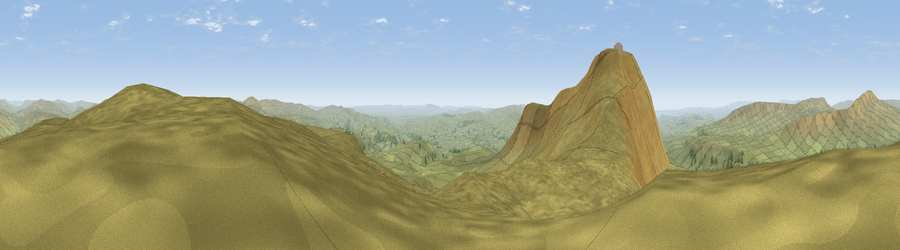

Green Hill
#3506 in England · top 6% of its area beats it · near IngletonThe view, rendered

A 360° render of this exact spot computed from the terrain model, tree cover and land cover — summer colours, afternoon light, calibrated against photographs of famous viewpoints. Real trees, hedges and buildings will differ in detail.
The panorama
Grey silhouette: terrain skyline in each direction (720 bearings, Earth curvature and refraction included). Dashed green: skyline with trees (+15 m) and buildings (+8 m) as obstacles. Blue strip: how far the ground is visible on each bearing.
Where the view opens
Wedge length = distance to the farthest visible ground on that bearing (vegetation-aware). Rings at 10, 25 and 50 km.
What fills the view
96% grassland · 4% woodland
Angular shares of the visible panorama (visual magnitude), not map area. Landscape diversity 0.08 (0–1 Shannon).
Key numbers
More beautiful places nearby
The staircase of upgrades: each row has a higher view potential than everything closer. Driving times are estimates from straight-line distance, calibrated against real road routing — check an actual route before setting out.
| Place | Direction | Drive | Score |
|---|---|---|---|
| Simon Fell | ENE · 0 km | ~1 min | 75.1 |
| Viewpoint near Ingleton | WSW · 1 km | ~3 min | 79.5 |
| Whernside | N · 7 km | ~14 min | 79.9 |
| Warton Crag | W · 26 km | ~42 min | 83.2 |
| Viewpoint near Grange-over-Sands | W · 36 km | ~54 min | 83.4 |
| Viewpoint near Finsthwaite | WNW · 39 km | ~58 min | 90.3 |
| The Knoll | S · 388 km | ~373 min | 91.0 |
54.17045, -2.38142 · source: osm peak · position refined by local search. Computed location — check access rights before visiting.